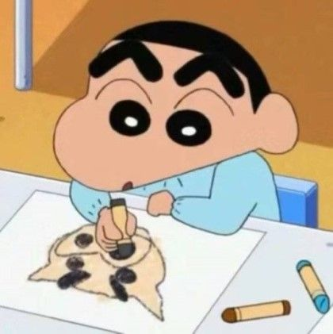
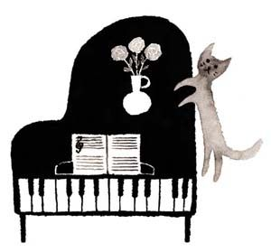

콘텐츠 제작을 위한 예술적 소양과 더불어 개인적인 행복함
♩미술
게임을 제작할때 제가 어느정도 구도,색감을 볼 줄 알아야 좋은 퀄리티가 나온다고 생각을 해서 미술학원에 1달 정도 다녔는데요, 현재는 일본어 공부와 자바스크립트 공부를 위해 잠시 쉬고 있습니다. 12월 이후에 3개월 정도의 스케치 커리큘럼 학원에 다니기 위한 계획이 있습니다. 실제로 배우니까 머리로 이해하는거랑 손이 따라주는거랑 너무 다르더라구여. 하지만 너무 재밌었네요. ux&ui도 관심이 있기 때문에 노력할려구요.
♬음악
게임사운드에 대한 부분도 관여하고 싶기 때문에 공부하려고 피아노도 샀으나, 현재 너무 바쁜 탓에 미술과 마찬가지로 12월 이후에 하기로 마음 먹었습니다. 피아노에 대한 감을 잃지 않기 위해 '요루시카'라는 제가 좋아하는 밴드의 곡을 피아노로 커버할 생각입니다. 피아노 실력이 좋지는 않지만 피아노에 집중할때 뭔가 해방된다는 느낌이 있어서 행복하네요